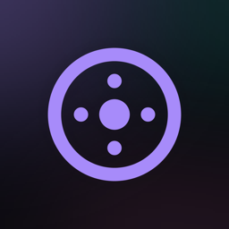

spool
A beautiful audiobook player for the books you already have — on iPhone, iPad and Apple TV.
- Your servers, one libraryAudiobookshelf and Jellyfin. Type the address you use in a browser and spool works out the rest, or pick a server it finds on your network.
- Your own filesImport .m4b and .mp3 audiobooks from Files, with chapters and covers.
- Free classicsThousands of public-domain books from LibriVox, built in.
- Made for listeningChapters, speed, sleep timer, smart rewind, bookmarks, offline downloads, and progress that syncs with your server.
- Private by designNo account, no ads, no tracking.